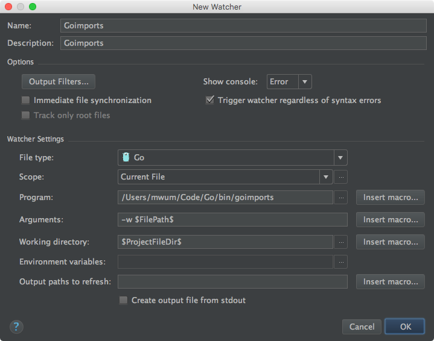

IntelliJ IDEA - Java * IDE
2016-07-20 | 更新: 2016-12-24
官网：https://www.jetbrains.com/idea/
配置
行为
Ensure line feed at file end on save
Preferences → Editor → General → Ensure line feed at file end on saveDisable Drag'n'Drop functionality in editor, 鼠标拖动就复制粘贴实在太烦了
Preferences → Editor → General → 去掉勾选 Enable Drag'n'Drop functionality in editor
外观
Copy Colors & fonts Scheme to own
Preferences → Editor → Colors & Fonts, Save AsEditor Font
Preferences → Editor → Colors & Fonts → FontCopy Code Style Scheme to own
Preferences → Editor → Code Style, Scheme → Manage → Save AsRight margin (columns)
Preferences → Editor → Code Style, Default Options → Right margin (columns)Code Style of Languages
Preferences → Editor → Code Style → Choose a languageShow whitespaces
Preferences → Editor → General → Apperance → Show whitespaces
快捷键
⇧ + ⌘ + o- Preferences → Keymap → Main menu → Navigate → Class⌘ + o- Preferences → Keymap → Main menu → Navigate → File⌘ + r- Refactor → Rename⌃ + r- Other → Run context configuration
插件
For Golong
更新: 2016-12-24
JetBrains 公司推出了 Go IDE Gogland，所以不必再使用 IntelliJ IDEA 来编写 Golang 了。
所以下面的内容就没什么用了。
假设已经安装好 Go, Gofmt, Goimports 等工具, 并且配置好 GOPATH
安装插件：https://github.com/go-lang-plugin-org/go-lang-idea-plugin
配置 GOPATH
Preferences → Languages & Frameworks → Go → Go Libraries, 在 Global libraries 中加入 GOPATH 路径
配置 GoImports
安装 File Watchers 插件
为 Go 添加新的 Watcher
Preferences → Tools → File Watchers, 点加号新建如下配置
